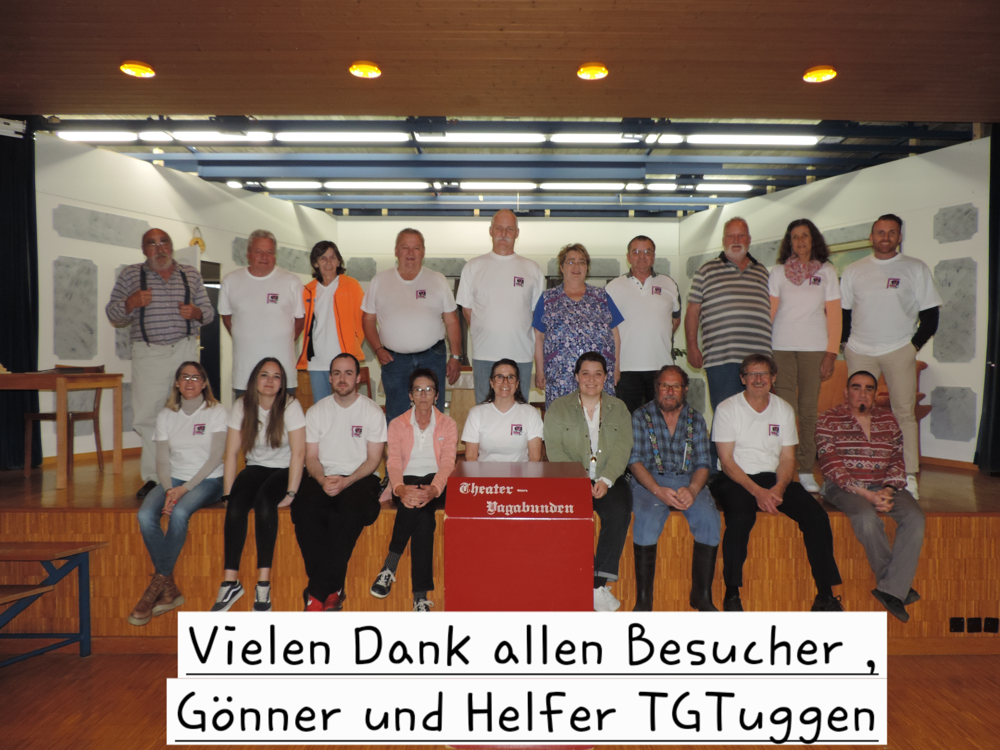
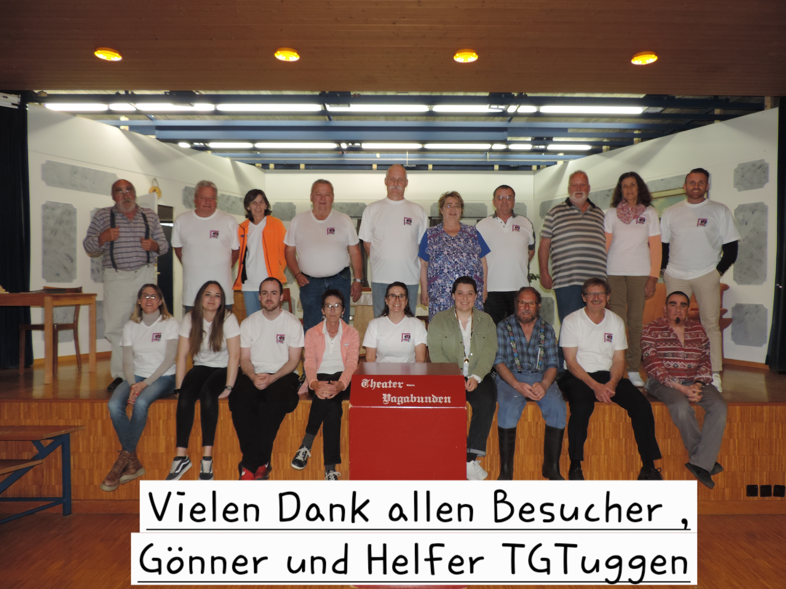

Kuh in Therapie
Vorführung für Heimbewohner, Begleiter & Kinder. -> Eintritt ist frei.
Die Theater Vagabunden Tuggen spielen seit 1989 bodenständige, urchige, unterhaltsame und humorvolle Theaterstücke in Tuggen, Schweiz. Erlebe das beste Theater in Tuggen!
Tickets erwerben


 

Vorführung für Heimbewohner, Begleiter & Kinder. -> Eintritt ist frei.
Schwank in drei Akten von Lukas Bühler.
Schwank in drei Akten von Lukas Bühler.
Schwank in drei Akten von Lukas Bühler.
Schwank in drei Akten von Lukas Bühler.
Präsident / Regie / Ehrenmitglied
Vizepräsident / Kasse / Schauspiel
Aktuarin / Schauspiel
Schauspiel / Ehrenmitglied
Schauspiel
Maske
Schauspiel
Schauspiel
Schauspiel
Schauspiel
Helfer
Webseite / Fotografie / Kamera
Ein Lustspiel in 3 Akten.
Auf Grund Neustrukturierung der Theatergruppe
Auf Grund von COVID-19
Auf Grund von COVID-19
Auf Grund von COVID-19
Auf Grund von COVID-19
Gründungsjahr: 1989
Zuhause: Restaurant Hirschen
Tja, wie kommt man eigentlich auf die Idee, einen Theaterverein "Vagabunden" zu taufen. Nun, das hat durchaus seine Gründe. Der Vagabund zieht von Ort zu Ort und weilt dort, wo es ihm gefällt. So auch unsere Theatergruppe. Bevor wir uns nämlich endgültig vom Vagabunden-Leben verabschiedet haben, zogen auch wir mit unseren lustigen Theaterstücken von Ort zu Ort und erfreuten die Gemüter der ansässigen Dorfbewohner. Doch irgendwann wurde uns das vagabundieren zu bunt und wir bekamen Asyl in der schönen Gemeinde Tuggen, wo wir inzwischen zu einem festen Bestandteil des Dorfes geworden sind. Zudem wurde uns auch ein Dach über dem Kopf angeboten: Bernadette Lüchinger vom Restaurant Hirschen erklärte sich bereit, die Vagabunden künftig zu beherbergen. Somit ist der Hirschen schon so etwas wie unser Zuhause geworden. Von 1992 bis 2019 wurde der Hirschensaal regelmässig während den Frühlingsmonaten zu einem Theatersääli umfunktioniert, wo sich die Vagabunden regelmässig treffen, um ihre Theaterstücke einzustudieren. Infolge Corona fanden keine Aufführungen mehr statt und auch das Vereinsleben konnte nicht weitergeführt werden. Im 2023 wurde der Verein neu strukturiert und bereits Ende 2024 war die Rollenverteilung für die Aufführungen 2025 in der Aula Eneda in Tuggen. Dank Bernadette Lüchinger dürfen wir in «unserem Zuhause» dem Restaurant Hirschen bis auf weiteres proben. Danke Bernadette!
Doch wir Vagabunden können nicht nur Theaterspielen. Nein, nein - überall wo es für die Dorfvereine in Tuggen etwas zu tun gibt, packen auch die Vagabunden mit an. Allem voran natürlich das - inzwischen auch wohlbekannte - Riedlandfäscht, wo die Vagabunden jeweils mit ihrer Festwirtschaft die vielen Festbesucher anziehen.
Also, wenn auch Sie einmal Lust haben, die Vagabunden in "Action" zu erleben, lohnt sich ein Ausflug nach Tuggen auf jeden Fall...
Hast Du Fragen? Oder fühlst Du Dich angesprochen und hast Lust mitzumachen? Wir freuen uns über eine Nachricht von Dir und antworten in der Regel innerhalb von 48 Stunden.